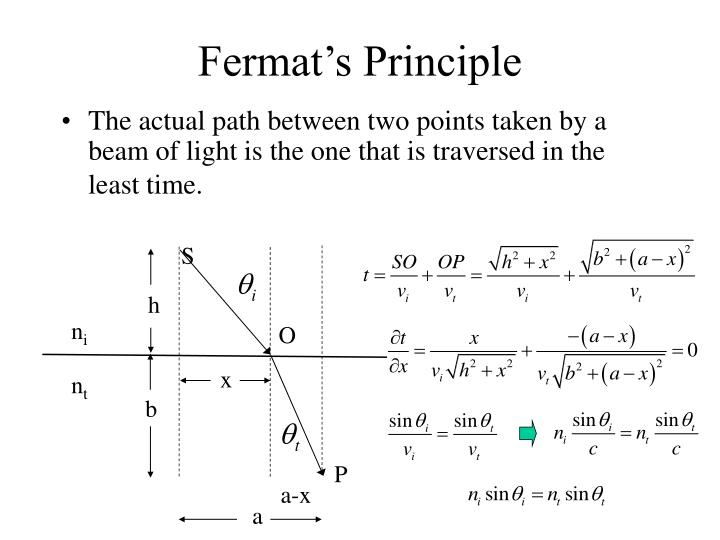

The Scientific Review
Direct Connection to Physics: The movie Arrival by Denis Villeneuve connects directly to advanced physics. Instead of using fake science, the story is built around real physics, laws of motion and light Specifically, it contrasts how humans view time second-by-second, and how aliens view the entire timeline at once.
What the Film Gets Right: Arrival connects directly to real physics by basing its alien science on a verified law called Fermat's Principle of Least Time. In the real world, a beam of light always bends when passing through water to take the path that takes the absolute shortest amount of time. Mathematically, it acts as if it knows its final destination before it even starts moving, which is the language of the alien in the movie.
The Inaccuracies in Movie: Inside the ship, gravity suddenly flips 90 degrees so the characters can walk on the walls. This is an apply to Albert Einstein's idea that gravity bends space. However, in the real world, gravity cannot be cut off like a sharp doorway. Real gravity is an invisible field that leaks and fades out slowly with distance. Because of this, it would actually bleed outside the ship and pull at the characters before they even step inside.
Conclusion: In conclusion, Arrival treats science with great respect. Instead of using fake sci-fi words, the movie uses real mathematical mysteries about how our universe works to tell an unforgettable story.
Scientific Diagrams


Movie Context & Screenshots


Final Verdict
The movie used physics pretty good constrasting to a lot of other movies, but there are some part that doesn't make sense when applying physics on it.
Sources
- https://www.mit.edu/~ashrstnv/fermat-least-time.html
- https://en.wikipedia.org/wiki/Arrival_(film)?scrlybrkr=cf824e44
- https://www.forbes.com/sites/chadorzel/2016/11/21/the-physics-that-got-left-out-of-arrival/
- https://www.wired.com/story/arrival-science-fact-fiction/
- https://www.machinebrief.com/news/sequential-vs-parallel-the-showdown-in-variational-inference-f2pl/